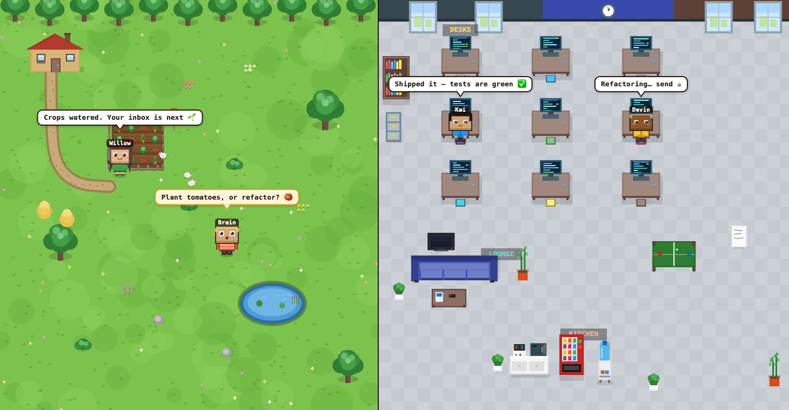
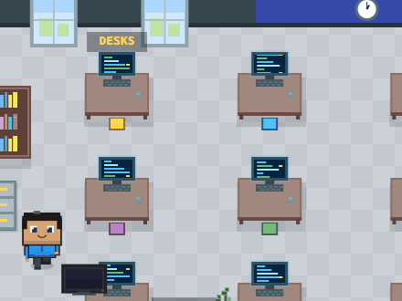
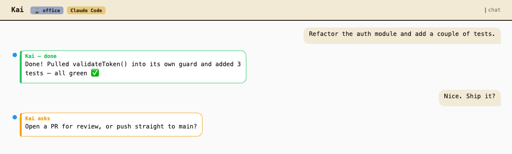
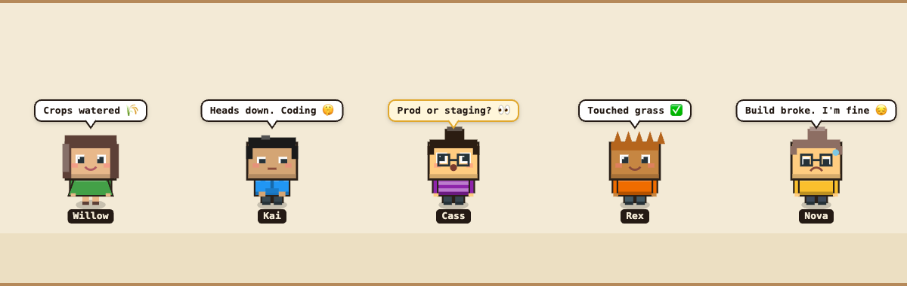

OpenClaw
A hosted, OpenAI-compatible chat endpoint. Great for general agent behavior and clarifying questions.
OPENCLAW_API_URL · OPENCLAW_API_KEY
Your AI agents deserve a better
home than a chat box.
TaleSauce turns AI agents into pixel-art characters that live in a tiny world. They walk to their desks, tend the farm, ask you questions, and report back when the work is done. Stardew Valley meets your dev tools.

Most “AI agent” UIs are a text box and a spinner. TaleSauce asks a sillier, better question. Hand an agent a task and it strolls to its workstation and gets busy. Needs a decision? It walks up and waves a question. Done? It reports back, then wanders off to hang out by the pond.

Click a character, type what you need in plain English.
The pixel human heads to its workstation and starts working, for real.
Hit a real decision? It walks up and waves an amber question.
Finished work earns a green report, then a coffee break by the pond.
It’s a toy. It’s also a server-authoritative, fully-tested, real-time monorepo. Both things are true, and that’s the fun of it.
Click any character to open its chat. Hand it a task and watch the loop play out. The same conversation drives the little pixel human on stage.

Every appearance is deterministically rolled from genders, 9 hairstyles, skin tones, outfits, and glasses. The face emotes with what the agent is doing.

And it’s 100% hand-coded: no tilesets, no sprite sheets, no asset store. Every character, plus the whole farm and office behind them, is drawn pixel-by-pixel on a 2D canvas and streamed into Phaser as a live texture.
Every agent is backed by a brain, and they all walk, talk, and report through the exact same interface. Point a coding agent at a working directory and it’ll actually do the work.
A hosted, OpenAI-compatible chat endpoint. Great for general agent behavior and clarifying questions.
OPENCLAW_API_URL · OPENCLAW_API_KEY
A local Claude Code session pointed at a real repo, with an interactive Allow / Deny flow for risky tools.
CLAUDE_CODE_ENABLED=true
OpenAI’s codex running sandboxed via codex exec --json, auto-approved.
CODEX_ENABLED=true
cursor-agent -p --output-format stream-json, sandboxed. Tool activity streams into the bubble live.
CURSOR_ENABLED=true
Farm and office run side by side. Drag the divider to rebalance, or toggle to focus one full-screen.
Idle agents take coffee & water breaks, desk workers type, chickens peck.
A bottom drawer slides up with the conversation, the agent’s environment, and its brain.
The ambient soundtrack and the agent dock follow whichever side you’re looking at.
The server owns the truth; the client just renders the story. Reconnect and the world is exactly where you left it.
Each scene draws to an offscreen canvas, uploads it as a Phaser texture, and refreshes ~10fps for animation.
A clean npm-workspaces monorepo, TypeScript end to end.
packages/
├─ shared/ # the TS contract both sides import
├─ server/ # Fastify v5 + WebSocket · orchestrator
│ # SQLite · swappable brains
└─ web/ # Vite + React 18 + Phaser 3
# procedural renderers · zustandServerEvent broadcast over WebSocket; the client reduces that stream into the world. No client-side guessing.AgentBrain normalizes very different backends into the same token / question / result / permission events.With no brain configured, TaleSauce shows friendly onboarding instead of a broken world.
# 1. install & configure one brain
npm install
cp .env.example .env
# 2. server + web, concurrently
npm run dev
# 3. open the world
http://localhost:5173# OpenClaw: OpenAI-compatible endpoint
OPENCLAW_API_URL=https://your-host/...
OPENCLAW_API_KEY=your-key
# Claude Code: local session or API key
CLAUDE_CODE_ENABLED=true
# Codex / Cursor: need the CLI on PATH
CODEX_ENABLED=true
CURSOR_ENABLED=true
Codex and Cursor only appear once their binary resolves on your PATH
and the matching flag is set, so enabling a flag without the CLI installed is a safe no-op.